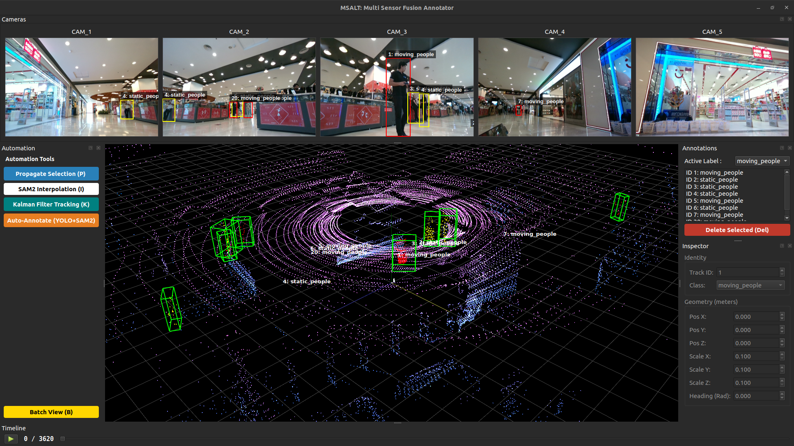
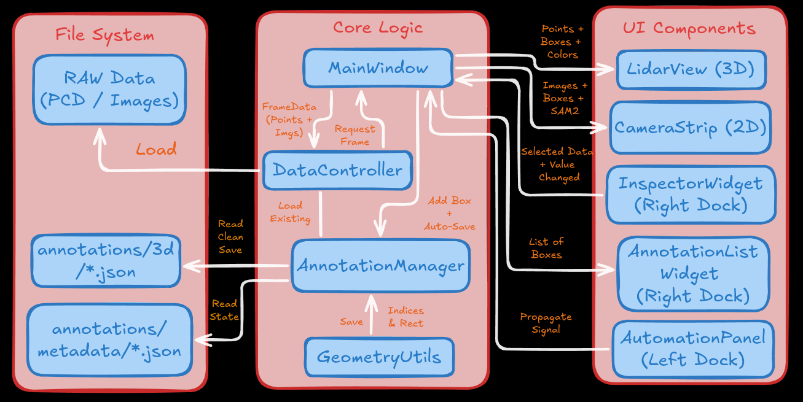
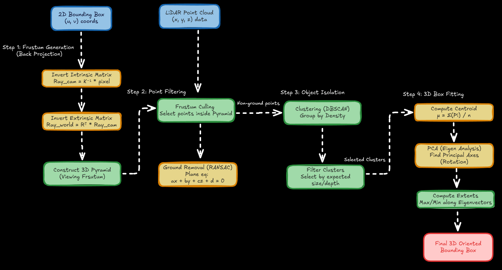
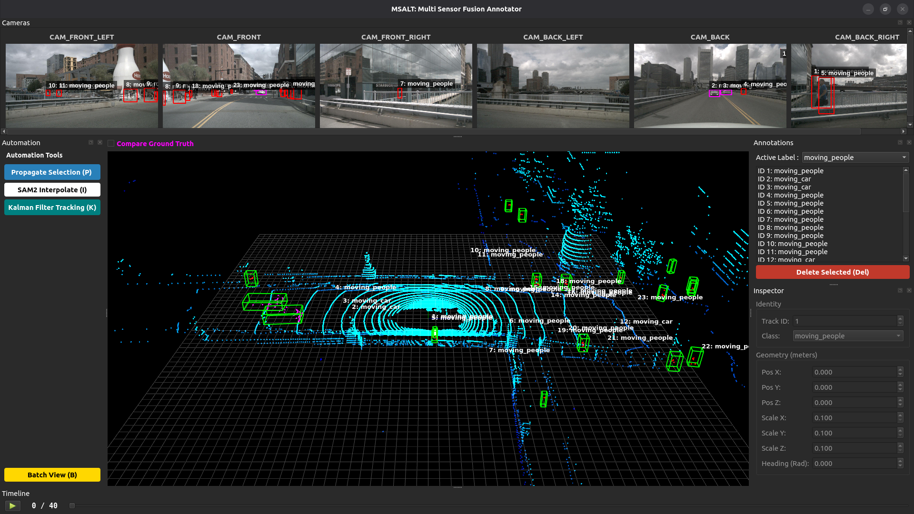
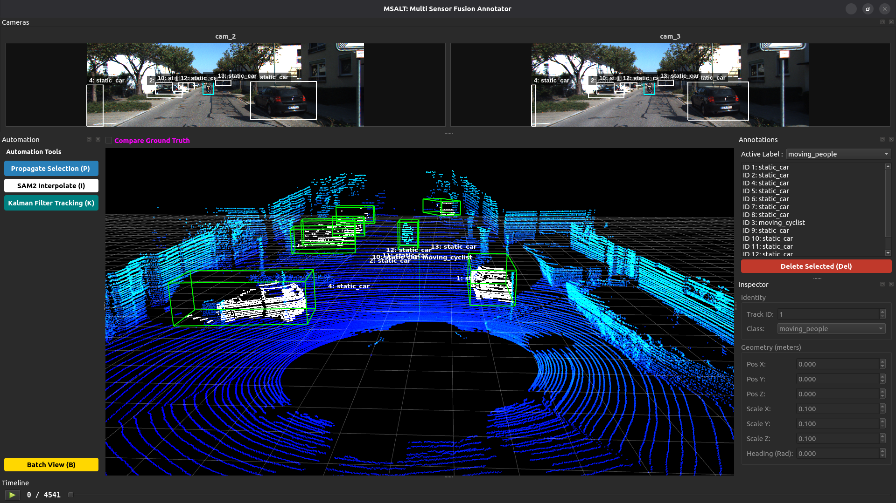
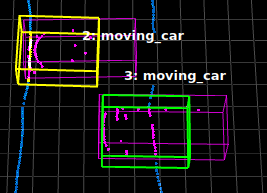
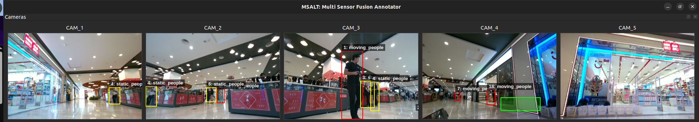
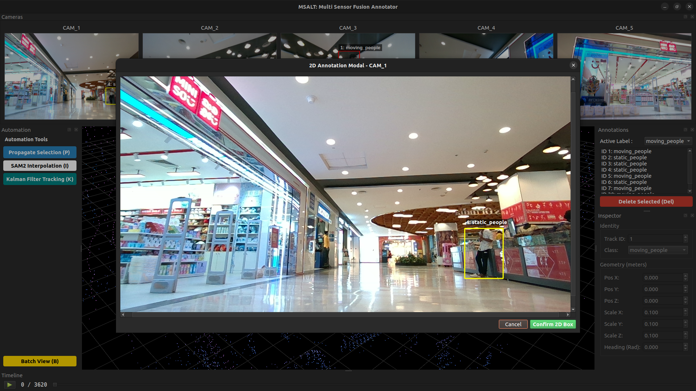
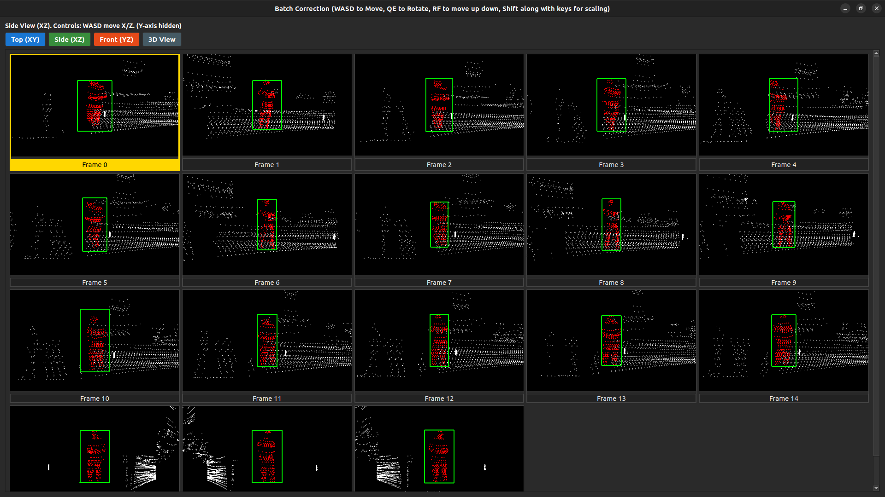

Introduction to MSALT
3D Sensor Fusion Annotation Tool
MSALT is a high-performance, open-source annotation tool designed for sensor fusion tasks. It bridges the gap between 2D camera imagery and 3D LiDAR point clouds, offering AI-assisted labeling workflows to accelerate dataset creation for autonomous robotics.
Features:
- Multi-Sensor Fusion: Seamlessly project 3D LiDAR points onto 2D camera frames and vice-versa.
- AI-Assisted Labeling: Integrated SAM 2 (Segment Anything Model) for automatic object segmentation.
- Automation Pipeline: Features linear propagation and “Copy-to-Next” automation to label sequences 10x faster.
- Semantic Point Clouds: Auto-colors LiDAR points based on the semantic class of the 2D bounding box.
- Split-State Saving: Decouples clean 3D datasets (.json) from editor metadata, ensuring compatibility with standard ML pipelines.
- Modular Config: Flexible YAML-based configuration for different robot platforms (e.g., Husky, SemanticKITTI).
- Batch editing: Easy editing with multiple 3D bounding box view for a set of sequences.
Installation
- You can setup the tool
locallyor usingDocker(Devcontainer)setup whose intructions are mentioned towards the end of thisreadme.mdfile
# MSALT uses uv for blazing fast dependency management.
git clone https://github.com/LiDAR-Motion-Segmentation/MSALT.git
cd MSALT
# Install uv (if not already installed)
curl -LsSf https://astral.sh/uv/install.sh | sh
# Sync dependencies (creates virtual env automatically)
uv sync
# on terminal in the root of the folder
chmod +x msalt
./msalt
# or use to run with uv
uv run main.py

Model weights
- Download the SAM 2 checkpoints and place them in the directory.
- Download sam2_hiera_large.pt
- Download the YOlO26 model and place them in the directory
- Download yolo26l.pt
Architecture

Algorithmic Math behind the tool
- 2D-3D back projection math
- Attaching link of the slide deck with in-depth math review and analysis slides

Directory Structure
- MSALT follows a modular
Model-View-Controller (MVC)pattern to separate UI logic from geometric processing.
├── config
│ ├── config.yaml
│ ├── models
│ │ └── default.yaml
│ └── msalt_setup
│ ├── husky_setup.yaml
│ └── semantic_kitty.yaml
├── Docker
│ ├── Dockerfile
│ └── run_docker.sh
├── debug_config.py
├── main.py
├── pyproject.toml
├── README.md
├── requirements.txt
├── src
│ ├── core
│ │ ├── annotation_manager.py
| | ├── commands.py
│ │ ├── geometry.py
│ │ ├── objects.py
│ │ ├── segmentation.py
│ │ └── tracker.py
│ ├── data
│ │ ├── data_controller.py
│ │ ├── interfaces.py
│ │ ├── loaders
│ │ │ └── realsense_loader.py
│ │ └── structures.py
│ └── ui
│ ├── components
| | ├── annotation_list.py
| | ├── automation_panel.py
| | ├── batch_view.py
| | ├── camera_modal.py
│ │ ├── camera_view.py
│ │ ├── drawable_label.py
| | ├── inspector_view.py
│ │ ├── lidar_view.py
│ ├── interfaces.py
│ ├── main_window.py
│ ├── playback_widget.py
├── test
| ├── test_annotation_manager.py
| ├── test_commands.py
│ └── test_geometry.py
└── uv.lock
NuScenes dataset Benchmarking
- Alot of modifications were required to have Nuscenes dataset on this tool as per benchmarking requests
- a seperate branch exists called
perf/nusceneswhere the code changes for Nuscenes exists - a seperate config exits called
nuscenes.yamlwhere you can choose the paths and the sequence
name: "nuscenes_mini"
dataset_type: "nuscenes"
version: "v1.0-mini"
paths:
# The root folder containing 'samples', 'sweeps', 'maps', 'v1.0-mini'
root_dir: "/home/Downloads/v1.0-mini"
scenes: [1]
extensions:
images: ".jpg"
lidar: ".pcd.bin"
- post the changes go to
config.yaml, change themsalt_setupto
defaults:
- msalt_setup: nuscenes
- models: default
- _self_
- to try it out use the steps below
git checkout perf/nuscenes
uv sync
# run this
uv run main.py
# OR
./msalt

Semantic Kitti dataset Benchmarking
- Make changes in the config paths in the same way in the
perf/nuscenesbranch code
name: "semantic_kitti"
dataset_type: "semantic_kitti"
# Dataset Settings
paths:
root_dir: "/home/Downloads/semantic-kitty/sequences"
sequence_id: "00"
# Set to null to load ALL frames found in the folder
num_frames: null
iou_threshold: 0.5
# SemanticKITTI Class ID -> Label Name Mapping
# IDs found in standard semantic-kitti.yaml API
label_mapping:
10: "Car" # car
11: "Car" # bicycle
13: "Bus" # bus
15: "Truck" # truck
18: "Truck" # construction vehicle
20: "Truck" # other-vehicle
30: "Pedestrian" # person
31: "Cyclist" # bicyclist
32: "Cyclist" # motorcyclist
252: "Car" # moving-car
253: "Cyclist" # moving-bicyclist
254: "Pedestrian"# moving-person
255: "Cyclist" # moving-motorcyclist
256: "Car" # moving-on-rails
257: "Bus" # moving-bus
258: "Truck" # moving-truck
259: "Truck" # moving-other-vehicle
- post the changes go to
config.yaml, change themsalt_setupto the following and then run the tool.
defaults:
- msalt_setup: semantic-kitti
- models: default
- _self_

Acknowledgement
- I would like to thank my advisor Dr. K. Madhava Krishna, IIIT Hyderabad for guiding me through this project and also my collaborators for advice
- I have taken a lot of ideas from SALT , SUSTechpoints, SematicKITTI_LABLER open source tools.
Citation
@article{ravi2024sam2,
title={SAM 2: Segment Anything in Images and Videos},
author={Ravi, Nikhila and Gabeur, Valentin and Hu, Yuan-Ting and Hu, Ronghang and Ryali, Chaitanya and Ma, Tengyu and Khedr, Haitham and R{\"a}dle, Roman and Rolland, Chloe and Gustafson, Laura and Mintun, Eric and Pan, Junting and Alwala, Kalyan Vasudev and Carion, Nicolas and Wu, Chao-Yuan and Girshick, Ross and Doll{\'a}r, Piotr and Feichtenhofer, Christoph},
journal={arXiv preprint arXiv:2408.00714},
url={https://arxiv.org/abs/2408.00714},
year={2024}
}
@INPROCEEDINGS{9304562,
author={Li, E and Wang, Shuaijun and Li, Chengyang and Li, Dachuan and Wu, Xiangbin and Hao, Qi},
booktitle={2020 IEEE Intelligent Vehicles Symposium (IV)},
title={SUSTech POINTS: A Portable 3D Point Cloud Interactive Annotation Platform System},
year={2020},
volume={},
number={},
pages={1108-1115},
doi={10.1109/IV47402.2020.9304562}
}
@article{wang2025salt,
title={SALT: A Flexible Semi-Automatic Labeling Tool for General LiDAR Point Clouds with Cross-Scene Adaptability and 4D Consistency},
author={Wang, Yanbo and Chen, Yongtao and Cao, Chuan and Deng, Tianchen and Zhao, Wentao and Wang, Jingchuan and Chen, Weidong},
journal={arXiv preprint arXiv:2503.23980},
year={2025}
}
@inproceedings{behley2019iccv,
author = {J. Behley and M. Garbade and A. Milioto and J. Quenzel and S. Behnke and C. Stachniss and J. Gall},
title = {{SemanticKITTI: A Dataset for Semantic Scene Understanding of LiDAR Sequences}},
booktitle = {Proc. of the IEEE/CVF International Conf.~on Computer Vision (ICCV)},
year = {2019}
}
@INPROCEEDINGS{nuscenes,
title={nuScenes: A multimodal dataset for autonomous driving},
author={Holger Caesar and Varun Bankiti and Alex H. Lang and Sourabh Vora and
Venice Erin Liong and Qiang Xu and Anush Krishnan and Yu Pan and
Giancarlo Baldan and Oscar Beijbom},
booktitle={CVPR},
year=2020
}
Installation
- You can setup the tool
locallyor usingDocker(Devcontainer)setup whose intructions are mentioned towards the end of thisreadme.mdfile
# MSALT uses uv for blazing fast dependency management.
git clone https://github.com/LiDAR-Motion-Segmentation/MSALT.git
cd MSALT
# Install uv (if not already installed)
curl -LsSf https://astral.sh/uv/install.sh | sh
# Sync dependencies (creates virtual env automatically)
uv sync
# on terminal in the root of the folder
chmod +x msalt
./msalt
# or use to run with uv
uv run main.py
Model weights
- Download the SAM 2 checkpoints and place them in the directory.
- Download sam2_hiera_large.pt
- Download the YOlO26 model and place them in the directory
- Download yolo26l.pt
Docker (Devcontainer)
Prerequisites
- Ubuntu (tested on 22.04)
- VSCode
- Remote Development Extension by Microsoft (Inside VSCode)
- Docker Installation
# Install Docker using convenience script curl -fsSL https://get.docker.com -o get-docker.sh sudo sh ./get-docker.sh # Post-install configuration sudo groupadd docker sudo usermod -aG docker $USER # Verify if Docker service is enabled sudo systemctl is-enabled docker # If not enable it sudo systemctl enable docker.service sudo systemctl enable containerd.service
Important
Reboot before proceeding further
sudo apt-get install -y nvidia-container-toolkit
sudo nvidia-ctk runtime configure --runtime=docker
sudo systemctl restart docker
-
Enabling Nvidia GPU for simulation
Hardware Requirement GPU CUDA-enabled Software Requirement Nvidia Driver - Ubuntu 22.04 >=515.43.04
# also run this command locally before proceding
xhost +local:docker
- Ensure that you change the filepath to load your directory in
.devcontainer/devcontainer.json
"mounts": [
"source=/tmp/.X11-unix,target=/tmp/.X11-unix,type=bind",
"source=<path for the data>,target=/app/data,type=bind",
"source=<path for the annotations>,target=/app/annotations,type=bind"
],
- Enter the container
- Open Command Pallete with
Ctrl+Shift+P - Select Dev Containers: Rebuild and Reopen in Container
- Open Command Pallete with
Label Configuration
Creating custom classes and directories for saving
- in the
config.yamlyou can put your custom path for saving the annotations in which 3d folder will contain the annotations in json format - in the
labelssection in theconfig.yamlyou can store the type of the classes that you want along with the colour coding for 2D boxes and the points inside the 3D bounding box. - the ones below are the most common classes in autonomous driving datasets, the naming conventions can be a subject to change.
output:
dir: "${hydra:runtime.cwd}/MSALT_outputs_annotations_nuscenes"
labels:
- name: "moving_people"
color: [255, 0, 0] # Bright Red
hotkey: "1"
- name: "static_people"
color: [0, 255, 0] # Green
hotkey: "2"
- name: "unknown"
color: [0, 255, 0] # Green
hotkey: "3"
- name: "static_car"
color: [255, 255, 255] # white
hotkey: "4"
- name: "moving_car"
color: [255, 0, 255] # Magenta
hotkey: "5"
- name: "moving_truck"
color: [255, 140, 0] # Dark Orange
hotkey: "6"
- name: "static_truck"
color: [255, 20, 147] # Deep Pink
hotkey: "7"
- name: "moving_bus"
color: [255, 215, 0] # Gold
hotkey: "8"
- name: "static_bus"
color: [128, 128, 0] # Olive (Dark Yellow-Green)
hotkey: "9"
- name: "moving_cyclist"
color: [0, 255, 255] # Cyan (Bright Electric Blue)
hotkey: "10"
- name: "static_cyclist"
color: [102, 0, 204] # Purple
hotkey: "11"
- name: "moving_construction_vehicle"
color: [255, 20, 147] # Deep Pink
hotkey: "12"
- name: "static_construction_vehicle"
color: [199, 21, 133] # Medium Violet Red
hotkey: "13"
- name: "moving_other_vehicle"
color: [138, 43, 226] # Blue-Violet (Neon Purple)
hotkey: "14"
- name: "static_other_vehicle"
color: [75, 0, 130] # Indigo (Very Dark Purple)
hotkey: "15"
Sensor Setup and Calibration
- MSALT expects your data to be organized as follows. Define the paths in
config/msalt_setup/docker_setup.yamlor make your own custom file with the paths
paths:
lidar_folder: "/app/data/lidar"
cameras:
- id: "CAM_1"
name: "Front Center"
image_folder: "/app/data/camera1"
intrinsics: "/app/data/camera1_intrinsics.txt"
extrinsics: "/app/data/camera1_extrinsics.txt"
- id: "CAM_2"
name: "Front Left"
image_folder: "/app/data/camera2"
intrinsics: "/app/data/camera2_intrinsics.txt"
extrinsics: "/app/data/camera2_extrinsics.txt"
- id: "CAM_3"
name: "Front Right"
image_folder: "/app/data/camera3"
intrinsics: "/app/data/camera3_intrinsics.txt"
extrinsics: "/app/data/camera3_extrinsics.txt"
- id: "CAM_4"
name: "Rear Left"
image_folder: "/app/data/camera4"
intrinsics: "/app/data/camera4_intrinsics.txt"
extrinsics: "/app/data/camera4_extrinsics.txt"
- id: "CAM_5"
name: "Rear Right"
image_folder: "/app/data/camera5"
intrinsics: "/app/data/camera5_intrinsics.txt"
extrinsics: "/app/data/camera5_extrinsics.txt"
extensions:
images: ".png"
lidar: ".pcd"
- In
config/config.yamlmake the modification where you have put your desired file setup with the paths
defaults:
- msalt_setup: <custom file setup name here>
- models: default
- _self_
UI Overview & Layout
3D LiDAR View
- this is the 3D Lidar view where you can see the pcd file loaded
- also in the
perf/nuscenesbranch you can see the ground truth boxes too

2D Camera Strip & Pop-Out Modal
2D Camera Strip
- in this strip you can draw a box like this image, where I am trying to draw a green box on the strip
- there is also an option of image override using shift but I wouldnt recommend it

Camera pop out modality

Inspector & Batch Grid View
Batch mode editing

- How it works :
- Open Batch View (B).
- You see 16 frames. Frame 10 has the box slightly too far left.
- Click Frame 10. It glows Yellow.
- Press D tap-tap-tap. The box moves right instantly.
- Press Q. The box rotates slightly.
| Action | Key | Shift + Key |
|---|---|---|
| Forward/Back | W / S | Scale Length |
| Left/Right | A / D | Scale Width |
| Up/Down | R / F | Scale Height |
| Rotate | Q / E | No Change |
- We have also added the option of
top(XY),side (XZ),front (YZ)andresetfor better editing
Manual 3D Drawing
Auto-Annotation (YOLOv8 + SAM2)
The Auto-Annotation pipeline is the core automation feature of MSALT. It bridges the gap between 2D camera images and 3D LiDAR point clouds, allowing you to automatically generate accurate 3D bounding boxes for pedestrians, cars, and other vehicles across all camera views with a single click.
How to Use It
Load a Frame: Ensure your current frame has both LiDAR and Camera data loaded.Trigger Pipeline: Click the orange Auto-Annotate (YOLO+SAM2) button in the left-hand Automation panel.Review: The system will freeze for a moment while the neural networks process the images. Once complete, the 3D LiDAR view will automatically populate with bounding boxes, and the status bar will report how many unique objects were created.
Under the Hood: The 2D-to-3D Pipeline
To keep VRAM usage low and execution fast, MSALT uses a highly optimized, 6-step forward-projection pipeline.
-
2D Object Detection (YOLO)The pipeline begins by passing every available camera image into a YOLO object detection model. YOLO scans the 2D image and outputs rough bounding boxes [x, y, w, h] for configured classes (e.g., cars, pedestrians, trucks). -
Precise Pixel Masking (SAM2)Because a 2D bounding box includes a lot of background pixels (like the road or sky), we cannot use it directly to grab 3D points. MSALT passes the YOLO bounding box and the image into the Segment Anything Model 2 (SAM2). SAM2 returns a strict, pixel-perfect boolean mask of the exact object. -
Forward-Projection & Frustum Culling-Instead of shooting complex 3D rays from the camera into the point cloud, MSALT uses a faster mathematical approach: -It takes the entire 3D LiDAR point cloud and projects it onto the 2D image plane using the camera’s intrinsic (K) and extrinsic pose matrices. -Any LiDAR point that lands perfectly inside the 2D SAM mask is “kept”. -
Ego-Vehicle RejectionBecause the LiDAR is mounted on the roof of the ego-vehicle, it often captures reflections from the vehicle’s own hood or trunk. To prevent the AI from spawning bounding boxes on the ego-vehicle, MSALT calculates the physical distance of the new box from the sensor origin (0, 0). Any box falling within a 3.0-meter radius of the LiDAR sensor is immediately rejected. -
3D Box Fitting (DBSCAN + PCA)
- The filtered 3D points are passed to the Geometry engine
- DBSCAN is used to cluster the points and remove outliers (like stray leaves or rain).
- PCA (Principal Component Analysis) is used to determine the primary orientation (heading/yaw) of the object.
- If the point cloud is too sparse (fewer than 5 points), the system falls back to a mathematical raycast, placing a standard-sized box at the correct depth on the ground plane.
3D Spatial Deduplication (Bird's-Eye NMS)
- Because multiple cameras have overlapping fields of view (e.g., CAM_FRONT and CAM_FRONT_RIGHT), the same physical object might be detected twice.
- Before saving a new 3D box, MSALT performs a spatial check against all existing boxes in the frame. It calculates the 2D Euclidean distance in the Bird’s-Eye View (X, Y plane). If the new box is within 0.8 meters of an existing box, it is classified as a cross-camera duplicate and discarded.
Configuration
You can configure the behavior of the Auto-Annotation pipeline in your models/default.yaml and config.yaml files:
Model Selection: Swap between yolov8n.pt (Nano, best for 6GB VRAM) or yolov8l.pt (Large, best accuracy).Detection Thresholds: Adjust the conf_threshold to make YOLO more or less strict.Allowed Classes: Modify the COCO index array (e.g., [0, 2, 3, 5, 7]) to control which objects the system annotates automatically.
Tracking (Kalman Filter)
Interpolation (SAM2 + PCA)
Shortcut Keys & Controls
Controls & shortcuts
| Context | Key / Action | Description |
|---|---|---|
| Navigation | Left Arrow / Right Arrow | Previous / Next Frame |
| Selection | Left Click (3D View) | Select a Bounding Box |
| Editing | Mouse Drag (2D View) | Draw a new Box (Trigger SAM2) |
| Automation | P | Propagate selected box to next frame |
| Interpolation | I | Interpolate selected box to next frame |
| Tracking | K | Track selected box to next frame without images |
| Management | Del | Delete selected box |
| System | Ctrl + S | Force Save (Auto-save is on by default) |
| Undo | Ctrl + Z | Undo changes |
| Redo | Ctrl + Y | Redo changes |
| 3D Box Drawing | Ctrl + Left Click | Draw a new Box directly on 3D viewer |
| 3D Box Drawing Cancellation | Esc | To cancel the box drawn on 3D viewer |
| 3D View | Left Drag / Right Drag | Rotate / Pan Camera |
| 3D View | Scroll | Zoom In / Out |
| 3D Box allignment | R | PCA trigger for correct 3D box allignment |
| Batch View | B | Batch mode of (4x4) set of frames |
| Camera Pop-out Modal View | Right Click | Right click on an image window to see a zoomed view |

Understanding the Metrics
Benchmarking
- You can click on
Compare Ground Truthto see the ground truth bounding boxes in the viewer - Change the paths in the
benchmark.yamlconfig to take in the paths
defaults:
- _self_
# Benchmark Settings
output_dir: "/MSALT_outputs_annotations_nuscenes/"
data_root: "/home/Downloads/v10-mini"
scene_id: 1
num_frames: 5
iou_threshold: 0.3 # IoU > 0.3 counts as True Positive
# Class Mapping (Grouping diverse labels into Report Categories)
# Format: "Raw_Dataset_Label": "Report_Class_Name"
label_mapping:
# Cars
moving_car: "Car"
static_car: "Car"
vehicle.car: "Car"
# Pedestrians
moving_people: "Pedestrian"
static_people: "Pedestrian"
human.pedestrian.adult: "Pedestrian"
human.pedestrian.construction_worker: "Pedestrian"
human.pedestrian.police_officer: "Pedestrian"
# Large Vehicles
truck: "Truck"
vehicle.truck: "Truck"
bus: "Bus"
vehicle.bus.rigid: "Bus"
vehicle.bus.bendy: "Bus"
- after this you can run
benchmark/benchmark_nuscenes.pyto generate the results for precision, recall, F1-score and mean IoU for a scene and a series of sequences
evaluating 5 frames for Scene 1...
=====================================================================================
STANDARD IOU BENCHMARK REPORT: SCENE 1
=====================================================================================
Class | Precision | Recall | F1-Score | Mean IoU | Counts (TP/FP/FN)
-------------------------------------------------------------------------------------
Pedestrian | 0.82 | 0.84 | 0.83 | 0.88 | 98/21/19
Car | 0.89 | 0.89 | 0.89 | 0.96 | 32/4/4
Truck | 1.00 | 1.00 | 1.00 | 0.96 | 3/0/0
-------------------------------------------------------------------------------------
AVERAGE | - | - | 0.91 | 0.93 | -
=====================================================================================
=====================================================================================
POINT-WISE BENCHMARK REPORT: SCENE 1
=====================================================================================
Class | Objects | GT Points | Pred Points | Error/Object
-------------------------------------------------------------------------------------
Car | 36 | 383 | 306 | 2.53
Pedestrian | 119 | 1170 | 1035 | 1.30
Truck | 3 | 4 | 4 | 0.00
-------------------------------------------------------------------------------------
AVERAGE / TOTAL | 158 | 1557 | 1345 | 1.56
=====================================================================================
System Architecture
Geometry & Raycasting Math
Testing
- We use
pytestfor logic verification andrufffor linting
# Check code style
uv run ruff check . --fix
# Run the test suite
uv run pytest
annotation_manager tests (test_annotation_manager.py)
test_add_box_assigns_track_id_when_unset: verifies auto track_id assignment when track_id = -1.test_add_box_preserves_existing_track_id: ensures explicit IDs are not overwritten.test_delete_box_removes_box_from_frame: simple delete behavior per frame.test_remove_box_by_track_id: checks remove_box deletes the correct track ID and leaves others.test_deselect_all_clears_selected_flag_across_frames: ensures deselect_all clears selected across all frames.
commands tests (test_commands.py)
- Uses a lightweight FakeAnnotationManager to avoid disk and UI coupling.
test_add_box_command_execute_and_undo: AddBoxCommand correctly adds and undoes.test_delete_box_command_execute_and_undo: DeleteBoxCommand deletes and restores.test_bulk_delete_command_execute_and_undo: BulkDeleteCommand deletes a batch and undo restores all.test_modify_box_command_execute_undo_and_redo: validates ModifyBoxCommand now:
- replaces old_state with new_state on execute,
- restores old_state on undo,
- reapplies new_state on redo.
- To support this,
ModifyBoxCommandincommands.pywas fixed soexecute()uses new_state andundo()restores old_state.
geometry tests (test_geometry.py)
- Existing tests kept as is (
test_box_corners,test_points_in_box). - New tests:
test_interpolate_box_midpoint: checks that interpolate_box att=0.5produces the geometric midpoint and halfway heading.test_refine_heading_returns_current_when_too_few_points: ensures refine_heading returns the original heading for very small point sets (<5).
UI components tests (test_ui_components.py)
- Uses an offscreen Qt platform (QT_QPA_PLATFORM=“offscreen”) and dummy classes (DummyViewWidget, DummyScatter) to test CameraStripWidget and LidarVisualizer without the overhead or instability of full GUI rendering.
-
test_camera_strip_frame_update_sets_resolution_and_pixmap: Verifies that when a new frame is loaded, the camera strip correctly updates the original image dimensions and sets the Qt pixmap. -
test_camera_strip_box_signal_includes_shift_override: Mocks the Qt keyboard modifiers to simulate holding the Shift key, ensuring the box_drawn signal correctly emits a True flag for the shift override. -
test_camera_strip_update_3d_projection_updates_only_calibrated_camera: Ensures that 3D projection updates strictly apply intrinsic and extrinsic matrices to cameras that have calibration data, correctly ignoring uncalibrated views. -
test_lidar_on_frame_update_sets_ground_plane_and_draws_when_no_boxes: Validates that loading a new point cloud calculates the ground plane Z-height (using the 50th percentile minus a bias) and triggers the default point rendering when no boxes exist. -
test_lidar_draw_points_default_sets_scatter_data: Checks that the default rendering correctly passes the point cloud coordinates, sizes, and base colors to the pyqtgraph scatter plot item. -
test_lidar_update_boxes_recolors_points_and_rebuilds_line_items: Mocks the point-in-box math to verify that points inside a bounding box are dynamically recolored to match the label’s color map. It also ensures old 3D box lines are cleared and new ones are added to the view widget.